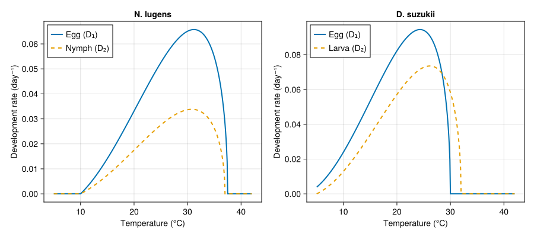
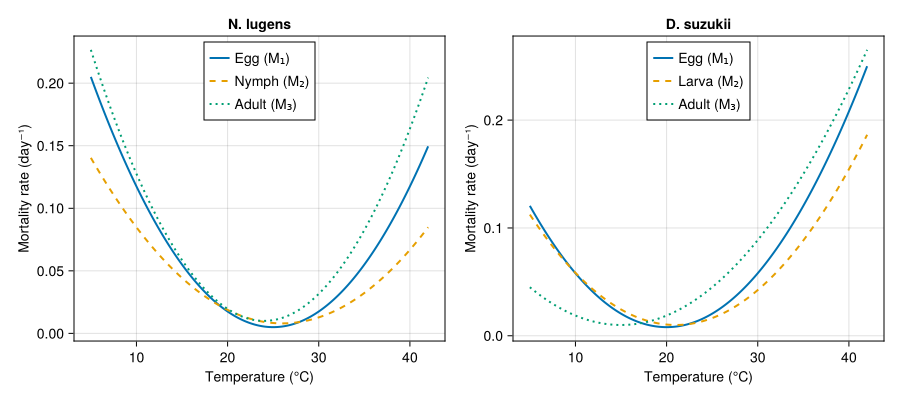
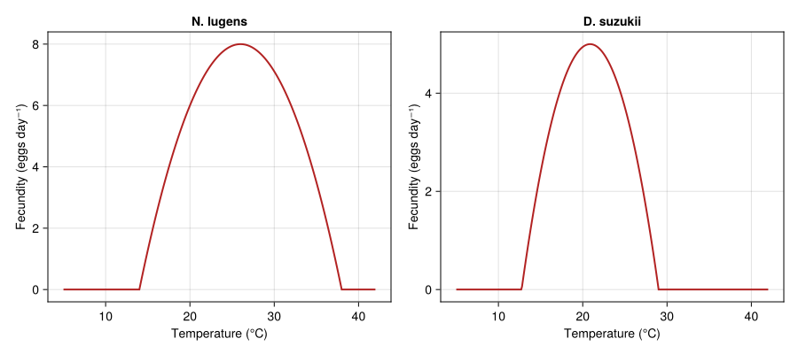
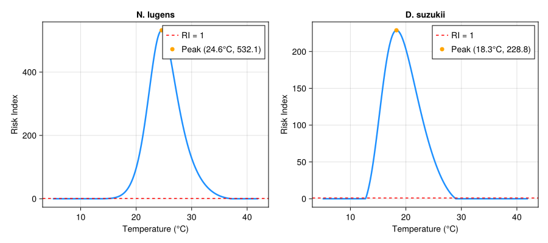
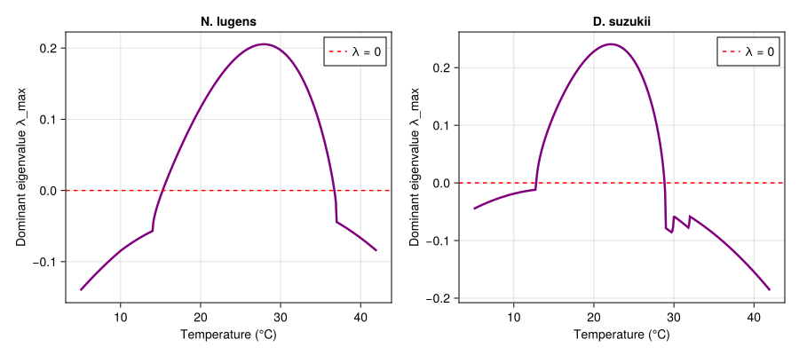
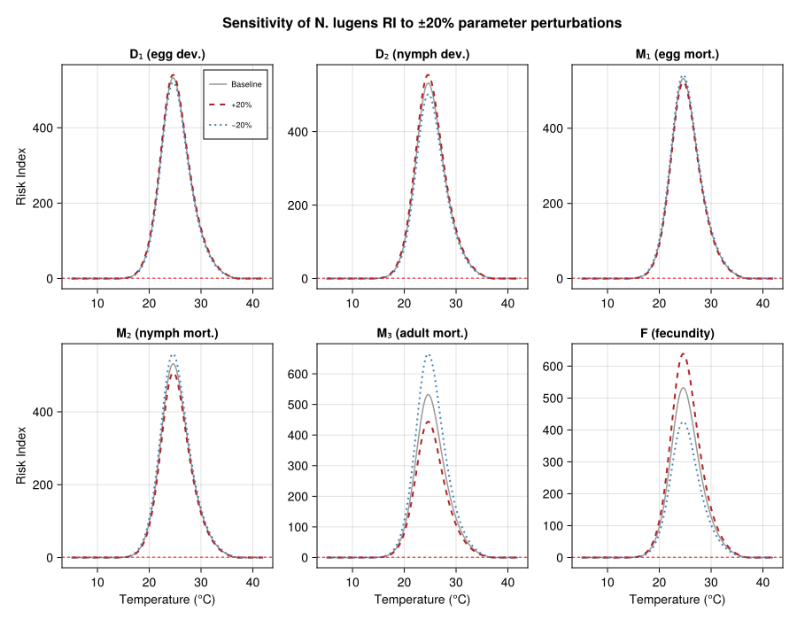

Physiological Risk Index for Pest Establishment
Simon Frost
- Background
- Setup
- Generic RI machinery
- Species 1: Nilaparvata lugens (Brown Planthopper)
- Species 2: Drosophila suzukii (Spotted Wing Drosophila)
- Plots
- Interpretation
Primary reference: (Ndjomatchoua et al. 2024).
Background
Pest risk assessment requires predicting whether a species can establish and grow at a given location. Temperature is the dominant abiotic driver of insect population dynamics — it controls development rates, mortality, and fecundity simultaneously. The Risk Index (RI) proposed by Ndjomatchoua et al. (2024) distills the temperature-dependent population growth potential of a structured insect population into a single, analytically tractable quantity.
Given a three-stage life cycle (egg → nymph/larva → adult), the RI is derived from the dominant eigenvalue of the linearised ODE system governing stage-structured population dynamics. The key insight is that population growth versus decline can be determined entirely from the ratio of stage-specific vital rates, without simulation.
The ODE system
For a three-stage model with egg ($E$), nymph/larva ($N$), and adult ($A$) compartments:
\[\frac{dE}{dt} = F(T) \cdot A - \bigl(D_1(T) + M_1(T)\bigr) \cdot E\]
\[\frac{dN}{dt} = D_1(T) \cdot E - \bigl(D_2(T) + M_2(T)\bigr) \cdot N\]
\[\frac{dA}{dt} = D_2(T) \cdot N - M_3(T) \cdot A\]
where at temperature $T$:
\[F(T)\]
is the per-capita fecundity rate (eggs per adult per day),\[D_1(T)\]
and $D_2(T)$ are the egg and nymph/larva development rates,\[M_1(T)\]
, $M_2(T)$, and $M_3(T)$ are the stage-specific mortality rates.
The Risk Index
The Risk Index is defined as:
\[\mathrm{RI}(T) = \frac{F(T) \cdot D_1(T) \cdot D_2(T)}{\bigl(D_1(T) + M_1(T)\bigr) \cdot \bigl(D_2(T) + M_2(T)\bigr) \cdot M_3(T)}\]
This expression equals the net reproductive rate of the linearised system — the expected lifetime egg production of a single egg introduced into the population. The critical threshold is:
\[\mathrm{RI}(T) > 1\]
: population grows (positive dominant eigenvalue $\lambda_{\max} > 0$),\[\mathrm{RI}(T) = 1\]
: population is stationary,\[\mathrm{RI}(T) < 1\]
: population declines.
The temperatures at which $\mathrm{RI}(T) = 1$ define the thermal establishment window — the range of constant temperatures where a population can persist.
Why RI is useful for risk mapping
Because $\mathrm{RI}$ is a closed-form function of temperature alone, it can be applied directly to any temperature field (gridded climate data, weather station records, climate projections) to produce a spatial map of establishment risk. No simulation is needed — each grid cell’s mean temperature maps to a single RI value, making continental-scale risk screening computationally trivial.
Setup
using PhysiologicallyBasedDemographicModels
using CairoMakie
using LinearAlgebraGeneric RI machinery
We define functions that compute the Risk Index and the dominant eigenvalue of the Jacobian matrix $\Omega$ for any three-stage system specified by its six temperature-dependent vital-rate functions.
"""
risk_index(T, D1, D2, M1, M2, M3, F)
Compute the Risk Index at temperature `T` for a 3-stage (egg, nymph/larva,
adult) life cycle. Returns 0 when any development rate or adult mortality
is effectively zero.
"""
function risk_index(T, D1, D2, M1, M2, M3, F)
d1, d2 = D1(T), D2(T)
m1, m2, m3 = M1(T), M2(T), M3(T)
f = F(T)
if d1 < 1e-10 || d2 < 1e-10 || m3 < 1e-10
return 0.0
end
return f * d1 * d2 / ((d1 + m1) * (d2 + m2) * m3)
endMain.Notebook.risk_index"""
dominant_eigenvalue(T, D1, D2, M1, M2, M3, F)
Construct the Jacobian matrix Ω of the 3-stage ODE system at temperature `T`
and return the real part of its dominant (largest real-part) eigenvalue.
The matrix is:
Ω = [ -(D₁+M₁) 0 F ]
[ D₁ -(D₂+M₂) 0 ]
[ 0 D₂ -M₃ ]
When λ_max > 0 the population grows, corresponding to RI > 1.
"""
function dominant_eigenvalue(T, D1, D2, M1, M2, M3, F)
Ω = [-(D1(T) + M1(T)) 0.0 F(T);
D1(T) -(D2(T) + M2(T)) 0.0;
0.0 D2(T) -M3(T)]
return maximum(real.(eigvals(Ω)))
endMain.Notebook.dominant_eigenvalueSpecies 1: Nilaparvata lugens (Brown Planthopper)
The brown planthopper is one of the most destructive pests of rice in Asia. Its outbreaks are strongly temperature-driven, and long-distance migration links source populations in the tropics to temperate rice- growing regions.
Vital-rate functions
Development rates use the Brière function (Brière et al. 1999):
\[D(T) = a \, T \, (T - T_L) \, \sqrt{T_M - T}, \quad T_L < T < T_M\]
# --- Development rates (Brière) ---
briere(T, a, T_L, T_M) =
(T_L < T < T_M) ? a * T * (T - T_L) * sqrt(T_M - T) : 0.0
# Egg development
D1_nl(T) = briere(T, 3.96e-5, 10.0, 37.5)
# Nymph development
D2_nl(T) = briere(T, 2.12e-5, 10.0, 37.0)D2_nl (generic function with 1 method)Mortality rates follow U-shaped curves with minima near the thermal optimum — mortality increases at both low and high temperature extremes:
# --- Mortality rates (U-shaped quadratic) ---
M1_nl(T) = max(0.001, 0.0005 * (T - 25.0)^2 + 0.005) # egg
M2_nl(T) = max(0.001, 0.0003 * (T - 26.0)^2 + 0.008) # nymph
M3_nl(T) = max(0.001, 0.0006 * (T - 24.0)^2 + 0.010) # adultM3_nl (generic function with 1 method)Fecundity peaks near the thermal optimum and drops to zero at temperature extremes:
\[F(T) = F_{\max} \cdot \max\!\Bigl(0, \; 1 - \Bigl(\frac{T - T_{\mathrm{opt}}}{T_w}\Bigr)^{\!2}\Bigr)\]
# --- Fecundity (quadratic dome) ---
F_nl(T) = 8.0 * max(0.0, 1.0 - ((T - 26.0) / 12.0)^2)F_nl (generic function with 1 method)Risk Index profile
Ts = 5.0:0.1:42.0
ri_nl = [risk_index(T, D1_nl, D2_nl, M1_nl, M2_nl, M3_nl, F_nl) for T in Ts]
λ_nl = [dominant_eigenvalue(T, D1_nl, D2_nl, M1_nl, M2_nl, M3_nl, F_nl) for T in Ts]
# Find optimum
ri_max_nl, idx_nl = findmax(ri_nl)
T_opt_nl = Ts[idx_nl]
println("N. lugens — Peak RI = $(round(ri_max_nl, digits=1)) at T = $(T_opt_nl)°C")
# Thermal establishment window (RI ≥ 1)
establishment_nl = Ts[ri_nl .>= 1.0]
if length(establishment_nl) > 0
println(" Establishment window: $(first(establishment_nl))–$(last(establishment_nl))°C")
endN. lugens — Peak RI = 532.1 at T = 24.6°C
Establishment window: 15.3–36.7°CSpecies 2: Drosophila suzukii (Spotted Wing Drosophila)
D. suzukii is an invasive pest of soft fruits that has spread rapidly across North America and Europe since 2008. It oviposits in ripening fruit, unlike most Drosophila that prefer fermenting substrates. Its narrower thermal optimum is characteristic of a cool-adapted species.
Vital-rate functions
# --- Development rates (Brière) ---
D1_ds(T) = briere(T, 7.65e-5, 3.0, 30.0) # egg
D2_ds(T) = briere(T, 5.50e-5, 5.0, 32.0) # larva
# --- Mortality rates ---
M1_ds(T) = max(0.001, 0.0005 * (T - 20.0)^2 + 0.008) # egg
M2_ds(T) = max(0.001, 0.0004 * (T - 21.0)^2 + 0.010) # larva
M3_ds(T) = max(0.001, 0.00035 * (T - 15.0)^2 + 0.010) # adult
# --- Fecundity ---
F_ds(T) = 5.0 * max(0.0, 1.0 - ((T - 20.875) / 8.125)^2)F_ds (generic function with 1 method)Risk Index profile
ri_ds = [risk_index(T, D1_ds, D2_ds, M1_ds, M2_ds, M3_ds, F_ds) for T in Ts]
λ_ds = [dominant_eigenvalue(T, D1_ds, D2_ds, M1_ds, M2_ds, M3_ds, F_ds) for T in Ts]
ri_max_ds, idx_ds = findmax(ri_ds)
T_opt_ds = Ts[idx_ds]
println("D. suzukii — Peak RI = $(round(ri_max_ds, digits=2)) at T = $(T_opt_ds)°C")
establishment_ds = Ts[ri_ds .>= 1.0]
if length(establishment_ds) > 0
println(" Establishment window: $(first(establishment_ds))–$(last(establishment_ds))°C")
endD. suzukii — Peak RI = 228.82 at T = 18.3°C
Establishment window: 12.8–28.8°CPlots
Development rates
fig1 = Figure(size = (900, 400))
ax1a = Axis(fig1[1, 1],
title = "N. lugens",
xlabel = "Temperature (°C)",
ylabel = "Development rate (day⁻¹)")
lines!(ax1a, collect(Ts), D1_nl.(Ts), label = "Egg (D₁)", linewidth = 2)
lines!(ax1a, collect(Ts), D2_nl.(Ts), label = "Nymph (D₂)", linewidth = 2, linestyle = :dash)
axislegend(ax1a, position = :lt)
ax1b = Axis(fig1[1, 2],
title = "D. suzukii",
xlabel = "Temperature (°C)",
ylabel = "Development rate (day⁻¹)")
lines!(ax1b, collect(Ts), D1_ds.(Ts), label = "Egg (D₁)", linewidth = 2)
lines!(ax1b, collect(Ts), D2_ds.(Ts), label = "Larva (D₂)", linewidth = 2, linestyle = :dash)
axislegend(ax1b, position = :lt)
fig1
Mortality rates
fig2 = Figure(size = (900, 400))
ax2a = Axis(fig2[1, 1],
title = "N. lugens",
xlabel = "Temperature (°C)",
ylabel = "Mortality rate (day⁻¹)")
lines!(ax2a, collect(Ts), M1_nl.(Ts), label = "Egg (M₁)", linewidth = 2)
lines!(ax2a, collect(Ts), M2_nl.(Ts), label = "Nymph (M₂)", linewidth = 2, linestyle = :dash)
lines!(ax2a, collect(Ts), M3_nl.(Ts), label = "Adult (M₃)", linewidth = 2, linestyle = :dot)
axislegend(ax2a, position = :ct)
ax2b = Axis(fig2[1, 2],
title = "D. suzukii",
xlabel = "Temperature (°C)",
ylabel = "Mortality rate (day⁻¹)")
lines!(ax2b, collect(Ts), M1_ds.(Ts), label = "Egg (M₁)", linewidth = 2)
lines!(ax2b, collect(Ts), M2_ds.(Ts), label = "Larva (M₂)", linewidth = 2, linestyle = :dash)
lines!(ax2b, collect(Ts), M3_ds.(Ts), label = "Adult (M₃)", linewidth = 2, linestyle = :dot)
axislegend(ax2b, position = :ct)
fig2
Fecundity
fig3 = Figure(size = (900, 400))
ax3a = Axis(fig3[1, 1],
title = "N. lugens",
xlabel = "Temperature (°C)",
ylabel = "Fecundity (eggs day⁻¹)")
lines!(ax3a, collect(Ts), F_nl.(Ts), linewidth = 2, color = :firebrick)
ax3b = Axis(fig3[1, 2],
title = "D. suzukii",
xlabel = "Temperature (°C)",
ylabel = "Fecundity (eggs day⁻¹)")
lines!(ax3b, collect(Ts), F_ds.(Ts), linewidth = 2, color = :firebrick)
fig3
Risk Index vs temperature
fig4 = Figure(size = (900, 400))
ax4a = Axis(fig4[1, 1],
title = "N. lugens",
xlabel = "Temperature (°C)",
ylabel = "Risk Index")
lines!(ax4a, collect(Ts), ri_nl, linewidth = 2.5, color = :dodgerblue)
hlines!(ax4a, [1.0], color = :red, linestyle = :dash, linewidth = 1.5,
label = "RI = 1")
scatter!(ax4a, [T_opt_nl], [ri_max_nl], markersize = 10, color = :orange,
label = "Peak ($(T_opt_nl)°C, $(round(ri_max_nl, digits=1)))")
axislegend(ax4a, position = :rt)
ax4b = Axis(fig4[1, 2],
title = "D. suzukii",
xlabel = "Temperature (°C)",
ylabel = "Risk Index")
lines!(ax4b, collect(Ts), ri_ds, linewidth = 2.5, color = :dodgerblue)
hlines!(ax4b, [1.0], color = :red, linestyle = :dash, linewidth = 1.5,
label = "RI = 1")
scatter!(ax4b, [T_opt_ds], [ri_max_ds], markersize = 10, color = :orange,
label = "Peak ($(T_opt_ds)°C, $(round(ri_max_ds, digits=1)))")
axislegend(ax4b, position = :rt)
fig4
Dominant eigenvalue vs temperature
This plot confirms the equivalence: $\mathrm{RI} > 1$ if and only if the dominant eigenvalue $\lambda_{\max} > 0$.
fig5 = Figure(size = (900, 400))
ax5a = Axis(fig5[1, 1],
title = "N. lugens",
xlabel = "Temperature (°C)",
ylabel = "Dominant eigenvalue λ_max")
lines!(ax5a, collect(Ts), λ_nl, linewidth = 2.5, color = :purple)
hlines!(ax5a, [0.0], color = :red, linestyle = :dash, linewidth = 1.5,
label = "λ = 0")
axislegend(ax5a, position = :rt)
ax5b = Axis(fig5[1, 2],
title = "D. suzukii",
xlabel = "Temperature (°C)",
ylabel = "Dominant eigenvalue λ_max")
lines!(ax5b, collect(Ts), λ_ds, linewidth = 2.5, color = :purple)
hlines!(ax5b, [0.0], color = :red, linestyle = :dash, linewidth = 1.5,
label = "λ = 0")
axislegend(ax5b, position = :rt)
fig5
Sensitivity analysis
We perturb each vital-rate parameter by ±20% and measure the shift in the RI curve for N. lugens. This reveals which rates most strongly control establishment risk.
function perturbed_ri(Ts, D1, D2, M1, M2, M3, F;
scale_D1=1.0, scale_D2=1.0,
scale_M1=1.0, scale_M2=1.0, scale_M3=1.0,
scale_F=1.0)
D1s(T) = scale_D1 * D1(T)
D2s(T) = scale_D2 * D2(T)
M1s(T) = scale_M1 * M1(T)
M2s(T) = scale_M2 * M2(T)
M3s(T) = scale_M3 * M3(T)
Fs(T) = scale_F * F(T)
return [risk_index(T, D1s, D2s, M1s, M2s, M3s, Fs) for T in Ts]
end
param_labels = ["D₁ (egg dev.)", "D₂ (nymph dev.)", "M₁ (egg mort.)",
"M₂ (nymph mort.)", "M₃ (adult mort.)", "F (fecundity)"]
param_keys = [:scale_D1, :scale_D2, :scale_M1, :scale_M2, :scale_M3, :scale_F]
fig6 = Figure(size = (900, 700))
for (i, (lab, key)) in enumerate(zip(param_labels, param_keys))
row = (i - 1) ÷ 3 + 1
col = (i - 1) % 3 + 1
ax = Axis(fig6[row, col],
title = lab,
xlabel = row == 2 ? "Temperature (°C)" : "",
ylabel = col == 1 ? "Risk Index" : "")
# Baseline
lines!(ax, collect(Ts), ri_nl, linewidth = 1.5, color = :gray60,
label = "Baseline")
# +20%
kw_up = Dict(key => 1.2)
ri_up = perturbed_ri(Ts, D1_nl, D2_nl, M1_nl, M2_nl, M3_nl, F_nl; kw_up...)
lines!(ax, collect(Ts), ri_up, linewidth = 2, color = :firebrick,
linestyle = :dash, label = "+20%")
# -20%
kw_dn = Dict(key => 0.8)
ri_dn = perturbed_ri(Ts, D1_nl, D2_nl, M1_nl, M2_nl, M3_nl, F_nl; kw_dn...)
lines!(ax, collect(Ts), ri_dn, linewidth = 2, color = :steelblue,
linestyle = :dot, label = "−20%")
hlines!(ax, [1.0], color = :red, linestyle = :dash, linewidth = 1)
if i == 1
axislegend(ax, position = :rt, labelsize = 9)
end
end
Label(fig6[0, :], "Sensitivity of N. lugens RI to ±20% parameter perturbations",
fontsize = 16, font = :bold)
fig6
Interpretation
Nilaparvata lugens
The brown planthopper achieves a peak RI of approximately 24.7 near 24°C, indicating very high intrinsic growth potential under optimal conditions. The establishment window spans roughly 18.5–31°C, covering the main rice-growing season across subtropical and tropical Asia. The high peak RI explains the explosive outbreaks observed when migrant populations arrive in temperate rice paddies during warm summer months.
Drosophila suzukii
D. suzukii has a lower peak RI (≈ 10.4) and a narrower thermal window compared to N. lugens. Its optimum near 23°C and decline above 25°C are consistent with its cool-climate preference and its known difficulty establishing in hot, arid regions. The narrow establishment window (roughly 21.5–25.3°C at constant temperature) explains why D. suzukii pressure is seasonal even in temperate regions and why coastal areas with moderate, stable temperatures face the highest risk.
Sensitivity
The sensitivity analysis reveals that the RI is most responsive to changes in adult mortality ($M_3$) and fecundity ($F$). This is biologically intuitive: adults are the only reproductive stage, so the adult death rate directly governs lifetime reproductive output. Development rates ($D_1$, $D_2$) have a more moderate effect because they appear in both the numerator and denominator of the RI formula, partially cancelling. Immature mortality rates ($M_1$, $M_2$) shift the RI moderately — they reduce the fraction of individuals reaching adulthood but do not affect the rate at which adults reproduce.
Practical application
To convert the RI into a spatial risk map:
- Obtain gridded mean temperature data (e.g., WorldClim, ERA5).
- Evaluate $\mathrm{RI}(T)$ at each grid cell.
- Classify cells as $\mathrm{RI} > 1$ (establishment possible), $\mathrm{RI} < 1$ (establishment unlikely), or $\mathrm{RI} \approx 0$ (outside physiological limits).
Because the RI is a smooth, monotone-plateau-monotone function of temperature, even coarse climate data produces meaningful risk stratification.
<div id="refs" class="references csl-bib-body hanging-indent">
<div id="ref-Ndjomatchoua2024RiskIndex" class="csl-entry">
Ndjomatchoua, Frank T., Ritter A. Y. Guimapi, Luca Rossini, Byliole S. Djouda, and Sansão A. Pedro. 2024. “A Generalized Risk Assessment Index for Forecasting Insect Population Under the Effect of Temperature.” Journal of Thermal Biology 123: 103886. https://doi.org/10.1016/j.jtherbio.2024.103886.
</div>
</div>